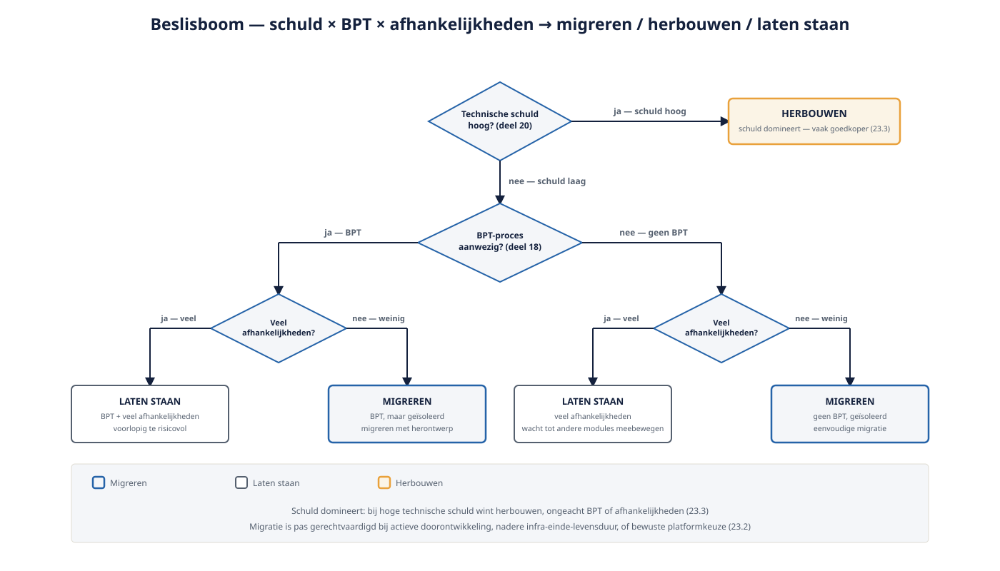
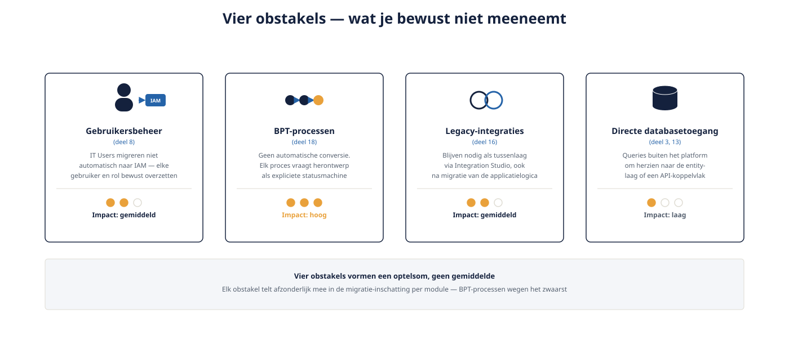

Deel 23 — Migratie O11 → ODC: coëxistentie, en wat je bewust níét meeneemt
Slidedeck · Ductus-cursus OutSystems · Niveau 3 — Expert · deel 23 van 30 · 16 slides
Slide 1 — Title: OutSystems: Leidend
OutSystems: Leidend
Deel 23 — Migratie O11 → ODC: coëxistentie, en wat je bewust níét meeneemt
Twee dagdelen · Zelfstandig aanbiedbaar
Slide 2 — Section: Dagdeel A — De migratiebeslissing
Dagdeel A — De migratiebeslissing
Slide 3 — Statement: Migratie is geen doel op zich.
Migratie is geen doel op zich.
Slide 4 — Bullets: Wanneer wél gerechtvaardigd
Wanneer wél gerechtvaardigd
- Actieve doorontwikkeling nodig
- O11-infrastructuur nadert einde levensduur
- Bewuste keuze voor uniform platform
Slide 5 — Bullets: Het beslismodel: drie vragen
Het beslismodel: drie vragen
1. Hoeveel technische schuld draagt de module al?
2. Bevat de module een BPT-proces?
3. Hoe hangt de module samen met andere modules?

Slide 6 — Opdracht: Opdracht 23.1 — Migreren of niet?
Opdracht 23.1 — Migreren of niet?
Drie satellieten beoordelen.
→ Werkboek 23.1
Slide 7 — Opdracht: Opdracht 23.A
Opdracht 23.A
Adviesdocument voor het Architecture Board
→ Werkboek, opties + risico's, geen besluit
Slide 8 — Section: Dagdeel B — De technische obstakels
Dagdeel B — De technische obstakels
Slide 9 — Table: Vier obstakels — wat je bewust niet meeneemt
Vier obstakels — wat je bewust niet meeneemt
| Obstakel | Kern van het probleem |
|---|---|
| Gebruikersbeheer | IT Users → IAM: bewust overzetten |
| BPT-processen | Geen conversie — herontwerp als statusmachine |
| Legacy-integraties | Tussenlaag blijft nodig |
| Directe databasetoegang | Herzien naar entity-laag of API |

Slide 10 — Opdracht: Opdracht 23.2 — Welk obstakel speelt hier?
Opdracht 23.2 — Welk obstakel speelt hier?
Drie migratiesituaties.
→ Werkboek 23.2
Slide 11 — Opdracht: Opdracht 23.B
Opdracht 23.B
Migratie-checklist toepassen op één satelliet
→ Werkboek, vier obstakels scoren
Slide 12 — Bullets: Wat wél overdraagbaar is
Wat wél overdraagbaar is
- Datamodel-concept (entities, relaties)
- Bedrijfslogica conceptueel, niet letterlijk
- Goed ontworpen Core-modules: makkelijker dan verweven logica
Slide 13 — Statement: Coëxistentie is geen tussenstation.
Coëxistentie is geen tussenstation.
Het is een blijvend architectonisch gegeven.
Slide 14 — Opdracht: Reflectieopdracht 23.3
Reflectieopdracht 23.3
Waarom is "tijdelijk" een risicovolle framing?
→ Werkboek 23.3
Slide 15 — Bullets: Kernpunten deel 23
Kernpunten deel 23
- Migratie: beslismodel, geen automatisme
- Vier obstakels vormen een optelsom, geen gemiddelde
- Herbouw kan goedkoper zijn dan migratie bij veel schuld
- Coëxistentie: structureel investeren, niet als tijdelijk behandelen
Slide 16 — Section: Volgende deel: Multi-team ontwikkeling en het conventiedocum
Volgende deel: Multi-team ontwikkeling en het conventiedocument